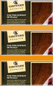

LATESTWORK
Free CSS Templates
makemyday is a CSS template that is free and fully standards compliant. Free CSS Templates designed this template.
This template is allowed for all uses, including commercial use, as it is released under the Creative Commons Attributions 2.5 license. The only stipulation to the use of this free template is that the links appearing in the footer remain intact. Beyond that, simply enjoy and have fun with it!